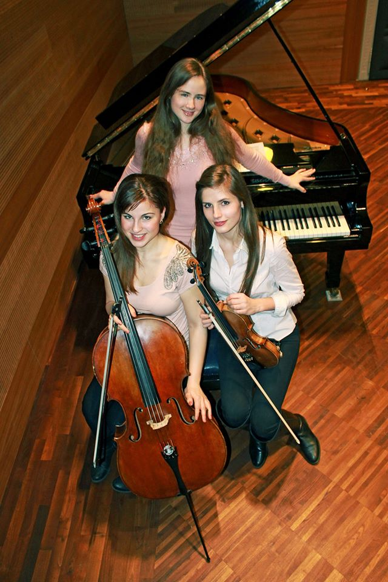

Rólunk
A Trio Energico 2015-ben alakult a Liszt Ferenc Zeneművészeti Egyetem három hallgatójából. Fiatalos lendületüknek és kirobbanó energiájuknak köszönhetően már egyetemi éveik alatt, fennállásuk kezdetétől több versenyeredményt is magukénak tudhatnak, sikereiket kiegészítve nívós külföldi és hazai hangversenyekkel. Az együttes közös motivációja, hogy mindenki számára elvigye a klasszikus zene szeretetét és világát.

Tagok
Eredmények, Fontosabb Fellépések
- Önálló est a Római Magyar Akadémián, 2017
- 1. helyezés: The Art of Chamber Music International Competition, 2016
- Élő adásban közvetített koncert a Bartók Rádióban, 2016
- 1. helyezés a Nemzetközi Danubia Talents Competition 2016-on
- Meghívásos részvétel a Lancaster International Piano Festival 2016-on (USA), mesterkurzus a Shanghai Quartet tagjaival, kiemelt fontosságú koncertek a mesterkurzus alatt
- A Gárdonyi Zoltán életműkoncertek fináléjaként megrendezett önálló hangverseny, 2016 (Kecskemét)
- Három napos koncertsorozat Olasz városokban (Velence, Padova, Abano Terme), 2015
- A Zeneakadémia meghallgatása alapján a legjobb csoportok egyike, melyet külsős koncertekre ki lehet ajánlani, 2015
- Koncertek a Milánói Expo magyar pavilonjában, 2015 (Olaszország)
- 1. helyezés a XIII. International Premio Citta di Padova versenyen, 2015 (Olaszország)
- Kiemelt Nívódíj a debreceni Országos Dohnányi Ernő Kamarazenei Versenyen, 2015
Tanárok, Mesterkurzusok
Fülei Balázs
Antonio Mostacci
Shanghai Quartet
Dr. Xun Pan
Simon Maurer
Takács-Nagy Gábor
Csalog Gábor
Alszászy Gábor
Hargitai Imre
Főbb Fellépési Helyek Magyarországon
Zeneakadémia
Művészetek Palotája
MTA Zenetudományi Intézet
Benczúr-ház
Barabás Villa